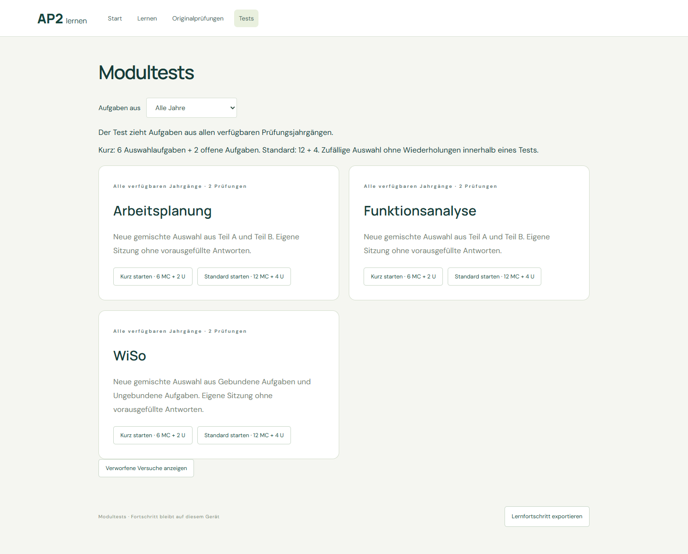
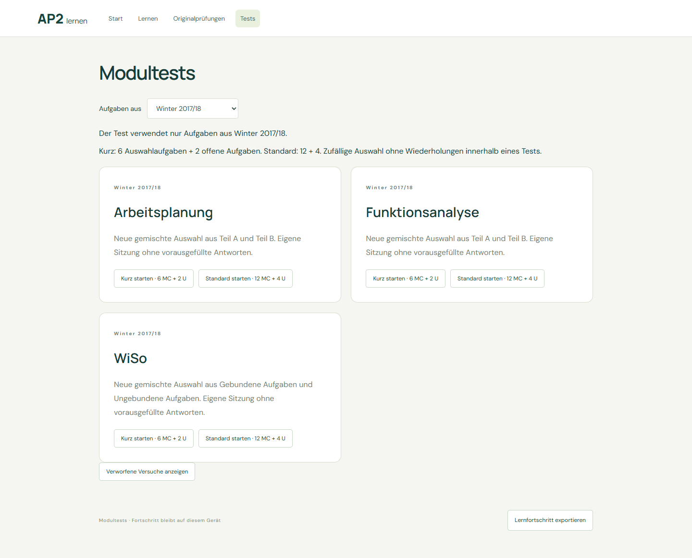
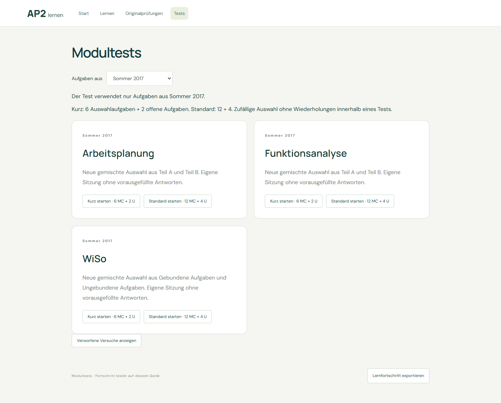

Alle Jahre öffnen · Nur Winter öffnen
Neun echte Kurztests prüfen AP, FA und WiSo in allen drei Filtermodi. source_mix stimmt mit dem Filter überein. Vorhandene Sitzungen bleiben bei Fortsetzen unverändert. URL, Zurück/Vorwärts, Neuladen und mobiler Überlauf wurden geprüft.
Browser-Prüfbelege und Quellen pro Test

